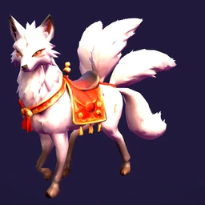
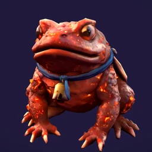
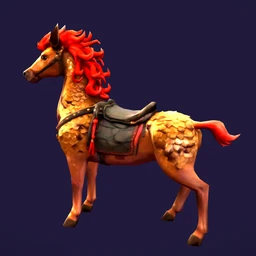

空も飛べる、バランス型。炎の息と大火球で、まとめて焼きはらう。
体力 速さ 攻撃
体力 260・弾 38・近接 40・速さ 50
見た目の高さ（ゲーム内単位） 通常形態 8.48
 現在のゲームの模型
現在のゲームの模型 大火球を発動
大火球を発動技・仲間・変身条件を読む

必殺技① 大火球
大きな火の玉。当たると広く爆発

必殺技② 炎の渦
自分のまわりに炎の渦。近くを焼く

スペース 突進
前へ体当たり。ふれた敵にダメージ
仲間レベルアップのレア札で加わる（最大3枠） 小さな赤い竜
小さな赤い竜
上級技：大火球 → 業火球 → 滅びの業火 ／ 炎の渦 → 炎の大渦 → 紅蓮の嵐
いちばん速く、よく曲がる。雷の息を連射し、必殺技は前の敵6体に落雷。体力は少なめ。
体力 速さ 攻撃
体力 170・弾 31・近接 30・速さ 60
見た目の高さ（ゲーム内単位） 通常形態 7.03
 現在のゲームの模型
現在のゲームの模型 落雷を発動
落雷を発動技・仲間・変身条件を読む

必殺技① 落雷
前の敵6体に雷を落とす

必殺技② 放電
自分のまわりの敵に電撃

スペース 緊急回避
横へすばやくよける
仲間レベルアップのレア札で加わる（最大3枠） 小さなワイバーン
小さなワイバーン
上級技：落雷 → 大落雷 → 神鳴り ／ 放電 → 大放電 → 雷帝の怒り
地中を進んで敵の足元へ噴出。岩投げで溶岩の姿になり、通った場所を燃やす。
体力 速さ 攻撃
体力 460・弾 70・近接 60・速さ 27
見た目の高さ（ゲーム内単位） 通常形態 8.86
 敵の足元へ潜って飛び出す
敵の足元へ潜って飛び出す 溶岩の姿になり足跡を燃やす
溶岩の姿になり足跡を燃やす技・仲間・変身条件を読む
仲間レベルアップのレア札で加わる（最大3枠） 小さな地竜
小さな地竜
安全に出られる場所がないときは地響きになる。溶岩の姿は10秒間。
地上では剣と光。屋外の金リングで小型天馬に30秒乗り、金と青の剣気を飛ばす。時間切れには安全な陸へ着地する。
体力 速さ 攻撃
体力 340・弾 38・近接 50・速さ 20
見た目の高さ（ゲーム内単位） 通常形態 2.10 ・ 天馬騎乗形態 3.55
 小さくした骨付き天馬で飛行
小さくした骨付き天馬で飛行 天馬の上で剣を振るう
天馬の上で剣を振るう技・仲間・変身条件を読む
上級技：光の柱 → 聖なる光柱 → 天の裁き ／ 回転斬り → 旋風斬り → 竜巻斬り
兵隊15人と大砲4門の本隊を操作。レア札1枚で5人の援軍が1部隊加わり、仲間は最大3枠・合計15人。本隊とは別に隊列を組む。
体力 速さ 攻撃
体力 380・弾 38・近接 32・速さ 14
見た目の高さ（ゲーム内単位） 通常形態 2.46
 防御で盾兵・槍兵・弓兵が密集
防御で盾兵・槍兵・弓兵が密集 仲間1枠に5人部隊・3枠で合計15人
仲間1枠に5人部隊・3枠で合計15人技・仲間・変身条件を読む
仲間レア札1枚＝5人部隊1隊。最大3枠＝仲間15人（本隊は別）。下は1部隊の内訳： 上級技：一斉砲撃 → 全軍砲撃 → 王国の総力 ／ 矢の雨 → 矢の嵐 → 万の矢
近い敵や岩をつかんで投げる。敵や建物から岩を吸収して最大2倍に成長し、被弾で岩が剥がれる。岩弾と対空投石も使う。
体力 速さ 攻撃
体力 520・岩弾85／対空70・近接 115・速さ 15（成長前）
見た目の高さ（ゲーム内単位） 通常形態 4.56
 近くの敵を持ち上げて投げる
近くの敵を持ち上げて投げる 投げた敵を別の敵へぶつける
投げた敵を別の敵へぶつける技・仲間・変身条件を読む
仲間レベルアップのレア札で加わる（最大3枠） 小さな岩人形
小さな岩人形
上級技：破壊光線 → 超破壊光線 → 滅びの光
人型は近くの敵を大槌で打つ。必殺技は周りを払う横なぎと、前方へのたたき割り。金のリングをくぐると30秒だけ戦車に乗り、小砲弾を撃つ。戦車の必殺技は大砲3連発と、とげの突撃。
体力 速さ 攻撃
体力 460・弾なし・近接 80・速さ 19（徒歩）
見た目の高さ（ゲーム内単位） 通常形態 3.90 ・ 戦車 12.10
 現在のゲームの模型
現在のゲームの模型 戦車へリング変身
戦車へリング変身技・仲間・変身条件を読む

必殺技① 大槌の横なぎ
大槌を一周振り、周りの敵を打ち払う

必殺技② 大槌のたたき割り
大槌を地面にたたきつけ、前の敵を直線で巻きこむ

スペース 身を守る
その場でかたまり、受けるダメージを8割へらす
仲間レベルアップのレア札で加わる（最大3枠） オーク将軍
オーク将軍
上級技：大槌の横なぎ → 大槌の連続横なぎ → 大槌の三連横なぎ ／ 大槌のたたき割り → 大槌の連続たたき割り → 大槌の三連たたき割り
爆撃とともに陸へ兵を最大6人降ろす。本体は建物4棟ごとに砲門を1門増設（最大4門増設）。仲間は1枠1艇・最大3艇で、各4門から小さな砲弾を順に撃つ。
体力 速さ 攻撃
体力 300・弾 48・近接 36・速さ 42
見た目の高さ（ゲーム内単位） 通常形態 19.00
 6人の兵士がパラシュートで降下
6人の兵士がパラシュートで降下 本船とは別に護衛艇3隻・各4門
本船とは別に護衛艇3隻・各4門護衛艇は1艇ずつ被弾して沈む。空いた枠はレア札で補充できる。仲間の4門は最初から装備され、本体の建物破壊による砲門増設とは別。
技・仲間・変身条件を読む

必殺技① 爆撃・兵員降下
爆弾を落とし、陸へ地上兵を最大6人降ろす。

必殺技② 全砲門斉射
建物破壊で増設した砲門も斉射に参加。

スペース 回避・急旋回
左右入力で横へかわし、入力がなければ180度反転する。
仲間レア札1枚＝護衛飛空艇1艇。最大3枠＝3艇×4門、計12門（操作する本体は別）。 護衛飛空艇1隻（4門）
護衛飛空艇1隻（4門）
砲門は出撃中の建物破壊で最大4門増設。降下兵は陸に着いてから戦う。
徒歩では弓とナイフ。レア札で同じレッドキャップが最大3人。屋外の金リングで鷹に30秒乗り、仲間も同じ必殺に参加。
体力 速さ 攻撃
体力 150・弾 22・近接 28・速さ 30
見た目の高さ（ゲーム内単位） 通常形態 1.07 ・ 鷹騎乗形態 2.18
 新しい鷹に乗り、仲間と飛行
新しい鷹に乗り、仲間と飛行 騎乗した仲間も一緒に必殺技を放つ
騎乗した仲間も一緒に必殺技を放つ技・仲間・変身条件を読む

必殺技① 矢の雨
矢を降らせる。鷹に乗ると仲間も一緒に矢を放つ。

必殺技② 影走り
少しの間すごく速く走り、通った敵を斬る。鷹に乗ると仲間も一緒に斬る。

スペース ジャンプ／騎乗中は回避
徒歩ではジャンプと空中の前転。騎乗中は横へよけ、素早く反転する。
仲間レベルアップのレア札で加わる（最大3枠） レッドキャップ
レッドキャップ
スペースで15秒の海を作り、陸でも水域を高速移動。八本の触手で通常敵を最大8体拘束し、墨で敵弾をそらす。
体力 速さ 攻撃
体力 620・弾 30・近接 55・速さ 9
見た目の高さ（ゲーム内単位） 通常形態 9.47
 墨で敵の弾をそらす
墨で敵の弾をそらす 8本の触手で同時につかむ
8本の触手で同時につかむ作った海と自然の海で同じ泳ぎ速度・触手の泳ぎ姿勢になる。範囲を出るか15秒経つと陸の速さへ戻る。城内・洞窟では海にできない。
技・仲間・変身条件を読む
仲間レベルアップのレア札で加わる（最大3枠） 魚人
魚人
四枚の翼で空を飛ぶ大天使。光の矢を放ち、光の巨人を6秒間呼び出して周囲の敵を打ち払う。もうひとつの必殺技は、天から降りそそぐ光の柱。
体力 速さ 攻撃
体力 300・弾 42・近接 65・速さ 43
見た目の高さ（ゲーム内単位） 通常形態 7.94
 現在のゲームの模型
現在のゲームの模型 光の巨人召喚を発動
光の巨人召喚を発動技・仲間・変身条件を読む
上級技：光の柱 → 聖なる光柱 → 天の裁き
小さな飛竜に乗る8騎の弓騎士。小さな炎と矢を交互に連射する。必殺技は全騎の小火炎連射と、矢の連続斉射。体力が減ると騎数も減る。
体力 速さ 攻撃
体力 360・小火炎11／矢6・近接なし・速さ 40
見た目の高さ（ゲーム内単位） 通常形態 2.18
 現在のゲームの模型
現在のゲームの模型 援軍1編隊は5騎・最大3編隊
援軍1編隊は5騎・最大3編隊技・仲間・変身条件を読む

必殺技① 小火炎一斉射撃
全騎が小さな炎を3回に分けて撃ちこむ

必殺技② 竜騎士の矢嵐
騎士たちが4回の斉射で、多数の矢を前方へ放つ

スペース 回避・急旋回
高さを保って横によけながら後ろを向く。左右の入力でよける方向を選べる
仲間レベルアップのレア札で加わる（最大3編隊） 竜騎士5騎のV字編隊
竜騎士5騎のV字編隊
上級技：小火炎一斉射撃 → 小火炎の連続斉射 → 全騎・火炎連射 ／ 竜騎士の矢嵐 → 竜騎士の連続矢嵐 → 全騎・百矢斉射
スペースで15秒の海を作り、水域を高速移動。通常の海流砲で大型魚人を最大8体呼ぶ。金リングで30秒超大型化し、通常攻撃も両必殺も槍の打撃になる。
体力 速さ 攻撃
体力 480・弾 45・近接 85・速さ 22
見た目の高さ（ゲーム内単位） 通常形態 6.77 ・ 超大型の海王 36.00
 海流砲で大型魚人を最大8体呼ぶ
海流砲で大型魚人を最大8体呼ぶ 超大型の姿で槍を振るう
超大型の姿で槍を振るう通常・超大型とも、自然海と作った海では陸の2.25倍の移動倍率。招集魚人は体力90・18秒。レア札の大型魚人は体力190・最大3体の別枠。
技・仲間・変身条件を読む

必殺技① 海流砲・大型魚人招集
通常は可視高10.5の大型魚人を最大8体、18秒呼ぶ。超大型では大槍の叩き割り。

必殺技② 戦場を浸す大津波
通常は15秒浸水。超大型では大槍の一回転。

スペース 海にする
屋外でゲージ12を使い、半径92の水域を15秒作る。水域では高速移動。効果中の再使用は不可。
仲間レベルアップのレア札で加わる（最大3枠）- 大型魚人
細い機銃弾を連射。飛行の軌跡へ爆弾を落とし、急降下で大型爆弾を一発だけ投下する。
体力 速さ 攻撃
体力 320・弾 12・近接 40・速さ 46
見た目の高さ（ゲーム内単位） 通常形態 6.00
 飛行の軌跡に続けて爆弾を投下
飛行の軌跡に続けて爆弾を投下 急降下で大型爆弾を一発落とす
急降下で大型爆弾を一発落とす技・仲間・変身条件を読む

必殺技① じゅうたん爆撃
飛行の軌跡に沿って最大10発を落とす。

必殺技② 急降下爆撃
大型爆弾を準備。6秒以内に急降下すると一発落とす。

スペース 回避・急旋回
高さを保って横によけながら後ろを向く。左右の入力でよける方向を選べる
仲間レベルアップのレア札で加わる（最大3枠） 戦闘機
戦闘機
大型爆弾は1発。間に合わなければ6秒で準備が解除される。
人型は近くの通常敵を最大6体、22秒寝返らせる。金リングで60秒の牛、次のリングで30秒の黒魔人へ変身。変身中は飛行し、通常攻撃も両必殺も打撃になる。
体力 速さ 攻撃
体力 430・弾 46・近接 90・速さ 17
見た目の高さ（ゲーム内単位） 通常形態 3.16 ・ 牛の魔物 5.57 ・ 黒い煙の魔人 11.76
 牛の魔物・前方への叩きつけ
牛の魔物・前方への叩きつけ 黒い煙の魔人・周囲のなぎ払い
黒い煙の魔人・周囲のなぎ払い変身中も地上・空中の近い敵に打撃が当たり、建物と木も壊せる。人型に戻ると元の技へ戻る。上級技の段階と入れかえた技は保持し、変身中だけ打撃へ切り替える。
変身中の技動画：牛の叩きつけ ／ 黒魔人のなぎ払い
技・仲間・変身条件を読む
必殺技① 勧誘／魔王の叩きつけ
人型は通常敵を最大6体味方にする。牛・黒魔人は前方の近い敵を叩き、地上にも届く。
必殺技② 闇の光線／魔王のなぎ払い
人型は前方へ光線。牛・黒魔人は周囲の近い敵をなぎ払う。
スペース 闇の守り
その場で守りをかため、受けるダメージをへらす
上級技：破壊光線 → 超破壊光線 → 滅びの光
地面まで降りるか、屋外の金のリングをくぐって着陸すると大型ロボに変形。地上では細いレーザー弾で一斉射撃し、近くの敵はレーザーブレードで斬る。空中のスペース／操作ボタンはバリア。地上では同じボタンで離陸して円盤に戻る。
体力 速さ 攻撃
体力 370・弾 34・近接 70・速さ 43
見た目の高さ（ゲーム内単位） 通常形態 4.00 ・ ロボット形態（着陸） 9.11
 円盤の回転レーザー掃射
円盤の回転レーザー掃射 大型ロボのレーザーブレード
大型ロボのレーザーブレード技・仲間・変身条件を読む

必殺技① レーザー乱れ撃ち
前方の敵をねらい、左右から短いレーザー弾を撃つ

必殺技② 回転レーザー掃射
反対向きの2本のレーザーで一周し、まわりの敵を切り刻む

スペース バリア
2秒間、敵から受けるダメージを80％減らす
仲間レベルアップのレア札で加わる（最大3枠） 小型UFO
小型UFO
上級技：破壊光線 → 超破壊光線 → 滅びの光全砲門斉射 → 乱れ撃ち → 空の要塞
魔法の弾と雷、光線で戦う魔法使い。金のリングをくぐると30秒間、巨大な魔術師に変身し、杖と魔法の弾が強くなる。時間切れで元の姿へ戻る。変身中のリングで残り30秒に戻せる。
体力 速さ 攻撃
体力 360・弾 40・近接 55・速さ 23
見た目の高さ（ゲーム内単位） 通常形態 2.05 ・ 巨大魔術師 13.33
 現在のゲームの模型
現在のゲームの模型 巨大魔術師へリング変身
巨大魔術師へリング変身技・仲間・変身条件を読む
上級技：落雷 → 大落雷 → 神鳴り破壊光線 → 超破壊光線 → 滅びの光
群れは72個の立方体を飛ばし、人型は殴り、竜型は飛んで口から光線を放ちます。合体の時間切れには72個が周囲へはじけます。
体力 速さ 攻撃
体力 480・弾 36・近接 60・速さ 24
見た目の高さ（ゲーム内単位） 通常形態 5.24 ・ 人型 10.41 ・ 竜型 8.12
技・仲間・変身条件を読む
合体の終了の動画
動画を直接開く
竜型の光線の動画
動画を直接開く
群れのすり抜けの動画
動画を直接開く
立方体の雨の動画
動画を直接開く
仲間レベルアップのレア札で加わる小さなキューブの群れ。最大3組。 上級技：地割れ → 大地割り → 奈落割り ／ 破壊光線 → 超破壊光線 → 滅びの光
弱った小型の敵を食べて回復・成長。被弾で縮み、小さなスライムが増える。レア札は青い海スライム。
体力 速さ 攻撃
体力 500・弾 42・近接 85・速さ 23
見た目の高さ（ゲーム内単位） 通常形態 7.00
 敵を引き寄せて捕食する
敵を引き寄せて捕食する 分身を同時に突撃させる
分身を同時に突撃させる技・仲間・変身条件を読む

必殺技① 捕食
小型の通常敵を引き寄せて食べ、回復・成長。

必殺技② 分身一斉突撃
分身を6〜10匹にそろえ、同時に突撃させる。

スペース ぷるぷる突進
前へ体当たりして、ふれた敵を吹きとばす
仲間レベルアップのレア札で加わる（最大3枠） 海スライム
海スライム
- 手下：被弾で現れる分身（最大10匹）。必殺技②で一斉に突撃。
捕食できるのは小型の通常敵。最大HP110以下か、残りHP45％以下の敵が対象。
仲間の竜へ号令して、狙った地面を焼かせます。金リングで巨大な竜に30秒変身し、時間切れに王自身が急降下して地面を爆破し、人の姿へ戻ります。
体力 速さ 攻撃
体力 500・弾 44・近接 80・速さ 23
見た目の高さ（ゲーム内単位） 通常形態 3.37 ・ 巨大な竜 26.00
 王の号令・家来の竜が急降下
王の号令・家来の竜が急降下 巨大な竜の時間切れ・竜王自身が急降下
巨大な竜の時間切れ・竜王自身が急降下 家来の竜が同時に炎を放つ
家来の竜が同時に炎を放つ 竜の仲間と戦う
竜の仲間と戦う技・仲間・変身条件を読む

必殺技① 竜の一斉炎
大火球と同時に仲間の竜が炎を放つ。

必殺技② 炎の渦
まわりへ炎を広げ、近くの敵を焼きはらう

スペース 号令
家来の竜が狙った場所へ急降下して焼く。消費12、待ち時間4秒。
竜王の時間切れの急降下の動画
動画を直接開く
竜王の号令の動画
動画を直接開く
仲間レベルアップのレア札で加わる（最大3枠）- 小さなワイバーン
巨大な竜は時間切れに陸へ急降下します。降りられる陸が近くにない海上では水しぶきを上げて人の姿へ戻ります。
倒した通常敵の姿を新しい順に20体記憶します。死者の軍勢でその姿を呼び、空きは骸骨兵で埋めます。ボスと進行保護対象は除きます。
体力 速さ 攻撃
体力 280・弾 38・近接 45・速さ 20
見た目の高さ（ゲーム内単位） 通常形態 3.87
技・仲間・変身条件を読む

必殺技① 死者の軍勢
最近倒した敵を元の姿と飛行の可否を引き継いで一斉召喚。残りは骸骨兵。自動復活と共通の上限は8〜20体、召喚時間は22秒。

必殺技② 光の柱
近くの敵へ、空から魔法の光の柱を落とす

スペース 闇の守り
闇をまとい、受けるダメージをへらす
召喚上限レア札1回で+4体。8→12→16→20体。再出撃すると記憶を初期化し、続きからは章開始時点の上限を復元します。 上級技：光の柱 → 聖なる光柱 → 天の裁き
小妖怪が背後の時計盤に最大8体並び、1.5秒ごとに一席進んで射撃します。小妖怪は2.3秒ごとに1体増えます。必殺で大型化または一斉突撃。
体力 速さ 攻撃
体力 290・小妖怪の弾17・本体近接なし・速さ 29
見た目の高さ（ゲーム内単位） 通常形態 4.30
 背後の時計盤と小妖怪の補充
背後の時計盤と小妖怪の補充 以前の実プレイ 小妖怪を大型の徒歩妖怪へ変える
以前の実プレイ 小妖怪を大型の徒歩妖怪へ変える 以前の実プレイ 空中の小妖怪を一斉に突撃させる
以前の実プレイ 空中の小妖怪を一斉に突撃させる技・仲間・変身条件を読む

必殺技① 大型妖怪へ変化
小妖怪を最大4体、大型の徒歩妖怪に変える。

必殺技② 雑魚妖怪の一斉突撃
小妖怪だけを一斉に敵へ突撃させる。

スペース 小妖怪を呼ぶ
小妖怪を2体補充。大小を合わせて最大8体。
時計盤の小妖怪の動画
動画を直接開く
仲間レア札で白狐、火吹き大ガマ、麒麟が順に仲間になります。時計盤の手下とは別枠です。
白狐
火吹き大ガマ
麒麟
大型化は最大4体で28秒間。移動技で小妖怪を補充できる。